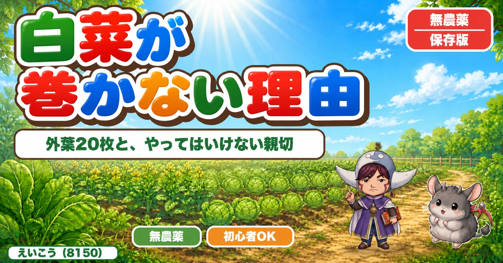
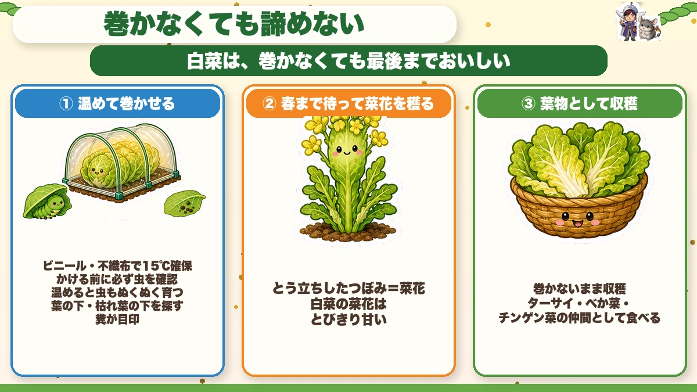
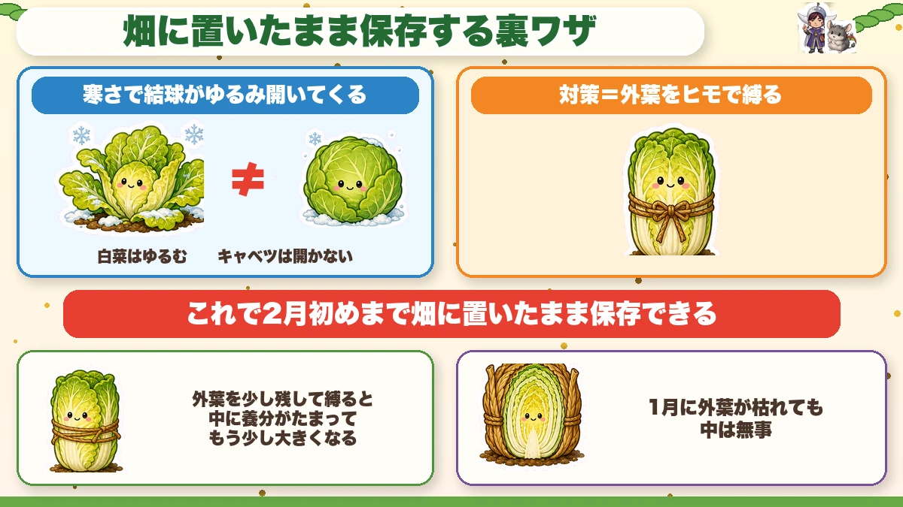
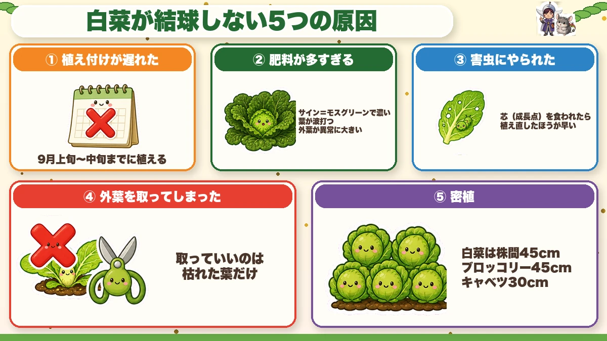
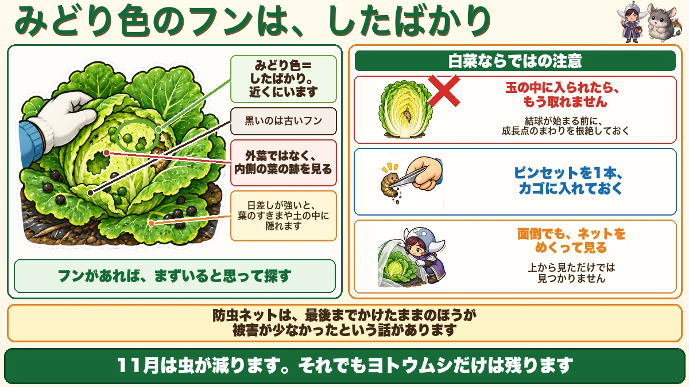
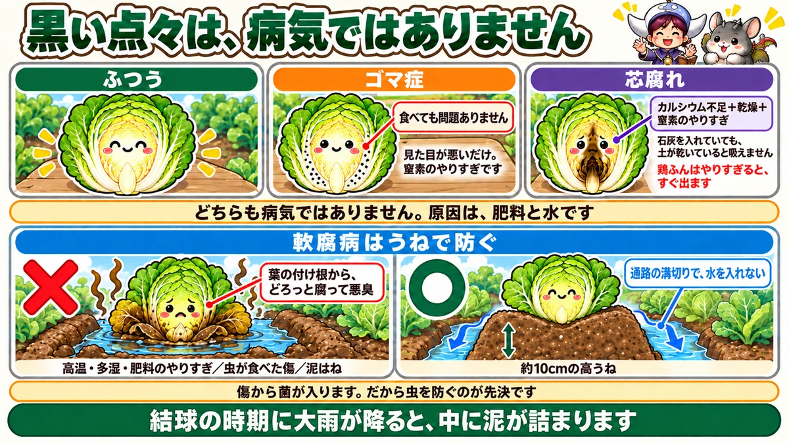
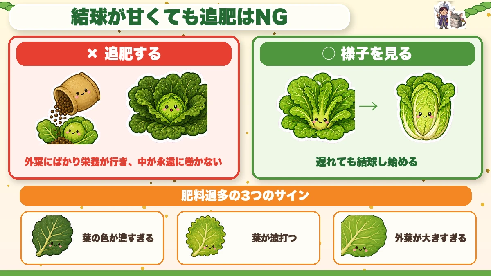
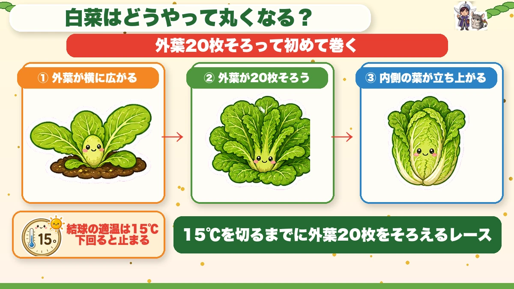

白菜を育てる段取り帳｜植え時・虫対策・巻かない株の判断

📖 この記事の目次
この記事で分かること
- 白菜の計画は『玉の大きさ』『地域の植え時』『苗か種か』の3つから決めます。
- 大玉をねらうなら、寒くなる前に外側の葉を十分育てる段取りが大切です。
- 虫対策は苗の確認から開始。防虫ネットを張ったあとも、葉裏と中心を調べます。
- 巻かない株には、日付、外葉、中心の芽、根の順で原因を探します。追加の肥料だけで解決しようとしません。
- 結球が難しくても、健全な株には葉物として収穫する道や、春のつぼみを楽しむ道があります。
- 植え時や追肥の回数には複数の説明があります。一つの数字に決めつけず、品種と栽培条件をそろえて判断します。
白菜って、冬に食べる野菜なので「涼しくなってから植えればええかな」と思いやすいんですよね。ところが、冬の玉を作る準備は、その前の暖かい時期に進みます。ここを逆算できると、作業の順番が見えてきます。
このページは、みなさんが畑で困ったときに戻って来られる段取り帳です。これから始めるなら『早見』と『作業の手順』を。すでに葉が広がっているなら『失敗の見分け方』から読んでください。全部を暗記しなくても大丈夫。いま必要なところを選べば十分です☺️
早見：白菜の育て方（ひと目で分かる数字）
まず確認する栽培の数字
- 種まき・植え付けの時期：結球を優先する説明では、8月後半〜9月中旬に植え終える計画。虫の多い時期を避ける説明では、9月末〜10月初めに植える計画です。どちらも全国共通の暦ではありません。
- 地域差の考え方：冷え込みが早い地域は、葉を増やせる期間が短くなります。遅植えの話をそのまま当てはめず、種袋の地域別の適期を先に確認。暖かい地域でも、品種が遅植えに向くかを見ます。
- ミニ白菜の植え時：8月半ば〜10月半ばまで対応する説明があります。大玉より選択肢が広いという目安で、すべてのミニ品種がこの全期間に適する意味ではありません。
- 種の量と深さ：ポット育苗は1か所3〜4粒、直まきは1か所4〜5粒という例があります。かぶせる土は約5mm。まいた場所を軽く押さえます。
- 苗を植える目安：育苗15〜20日、本葉3〜4枚の小苗を使う説明と、1か月以上育てた苗を使う説明があります。育苗容器の大きさで条件が変わります。
- 大玉の株間：40〜50cm。早生で40cm、晩生で50cmという使い分けがあります。虫を探しやすくしたい場合は、一列植えも選択肢です。
- ミニ白菜の株間：15〜30cmで大きさを変えた栽培例があります。同じ品種で15cmなら450g、30cmなら1.2kgという実測ですが、この重さを保証する数字ではありません。
- うねと通路：約10cm高くしたうねに、通路側の約10cmの排水溝を組み合わせる例があります。うね間60cmという説明もありますが、うね幅そのものとは区別します。
- うね幅：材料には、どの栽培にも共通する幅の指定はありません。一列か二列か、外葉が広がる場所とネットの余裕を見て決めます。幅を決める前に株間と通路を確保してください。
- 土の酸度：pH6.0〜6.5前後が目安です。数字が低いほど酸性寄り。調整は、土の状態を測ってから考えます。
- 元肥の時期：夏のうちに土を整え、9月植えなら8月から準備する計画があります。植える直前に大量の肥料を足す段取りは避けます。
- 追肥の回数：0回、1回、2回、約2週間おきという異なる説明があります。最初に入れた肥料と畑の蓄積が違うため、回数だけを比べないことが大切です。
- 追肥の時期：行う方法では、植えて約1か月後や、結球に入る前後が区切り。寒くなり、巻かないことに気づいてからの追加施肥とは分けて考えます。
- 収穫まで：早生は65日、中生は85日、晩生は95〜115日という表示例があります。ただし、種まき起点と定植起点の説明が混在するので、実際の表示を確認します。
- 連作の間隔：アブラナ科を続けない計画が基本です。材料には『何年間あければよい』という一律の年数はありません。前作と病気の履歴を見て場所を替えます。
この早見の使い方
数字を見ていると、なんか急に難しく感じますよね。最初に全部決めなくても大丈夫です。まず手元の種袋や苗の表示にある『適期』『株間』『収穫の目安』を拾ってください。そのあと、このページの数字と照らし合わせます。
例えば、9月中旬の大玉の話と、10月植えのミニ白菜の話は、同じ条件の比較ではありません。使う品種も、収穫したい大きさも、残っている暖かい日数も違います。別の条件の数字を寄せ集めると、計画だけは立派で、白菜の都合が抜けてしまいます。
記録は難しいものにしなくてOKです。
- 品種と地域別の適期を確認した
- 種をまいた日と、苗を植えた日を分けて書いた
- 株間と、虫を探すための通路を確保した
- 前作がアブラナ科だったか調べた
- 収穫予定日は目安とし、最後は玉の締まりで判断することにした
この5つがそろえば、あとで「なぜ小さいのか」を考えるときにも助かります。白菜を育てる記録は、日付を残すだけでもかなり役に立つんですよね。
作業の手順（時期の順）
1．食べたい大きさから品種と日程を決める
- 『早めに食べ切る』『小さな玉を順番に収穫する』『冬まで大玉を残す』のどれを目指すか決めます。
- 地域別の適期と照らし合わせ、早生・中生・晩生、またはミニタイプを選びます。
- 種から始めるなら育苗期間も予定に入れ、苗を買うなら植えたい日に健康な苗が用意できるか確認します。
- 収穫が一度に集中しそうなら、適期の範囲で植える日を少しずらすか、成熟の早さが違うものを組み合わせます。
初挑戦で、いきなり大きな玉を冬まで畑に置く計画にしなくても大丈夫です。早生を早めに収穫する、小さな白菜を育てて食べる、という入口もあります。無農薬で育てたい場合は、栽培期間や肥料の必要量を抑えやすいミニタイプが候補になります。
冬に畑で保存したいなら、寒さへの向き不向きも確認してください。早生の作りやすさと、冬越しのしやすさは同じではありません。「早くできるから、長く置けるはず」と考えると、収穫の予定がずれてしまいます。
種をまく場合と、すでに育った苗を買う場合にも時間差があります。同じ日にスタートすると、種からの方は収穫が3〜4週間あとになるという説明があります。種の方が悪いのではなく、苗が売り場に来るまでに育った時間を、家でも必要とするわけです。
2．植える場所を調べ、土の準備を先に済ませる
- 前作の野菜を確認し、白菜やほかのアブラナ科を続けた場所を避ける計画を立てます。
- 日の当たり方と、雨のあとに水が残る場所を見ます。水の逃げ道がなければ、植える前に整えます。
- 前作で入れた肥料と、生育の様子を振り返ります。毎年育てている土に、新しい土と同じ量を足す前提で進めません。
- 元肥は植え付けまでに余裕を持って準備し、土の浅い層に偏りなく混ぜます。深さ約15cmの表層に混ぜる説明があります。
- うねの中央を少し高くし、通路へ水が流れる形に整えます。土がぬかるむ日は作業を見送ります。
元肥は、植える前に土へ入れておく肥料のことです。白菜は葉をたくさん育てる野菜ですが、「たくさん食べるなら、最初にどっさり」は困ることがあります。余った肥料や植え際の濃い肥料が根に負担をかけると、肝心の初期生育が遅れてしまいます。
ここでは、資材の種類をまたいだ一律の配合表は置きません。前作の残り、肥料の成分、土の状態で必要量が変わるからです。使う製品の表示と、これまでその場所に何を入れたかを一緒に見てください。複数の栽培法の量を足し合わせるのは、白菜にとって大盛りすぎるかもしれません💦
夏の太陽熱を利用して土を処理する方法を取り入れるなら、土づくりと合わせて前もって予定を組みます。材料には3週間程度の処理を組み込んだ計画があります。処理後に深く耕し直すと、下にあった未処理の土を上へ動かすため、仕上げの扱いも大切です。
草や前作の残りを片づけるときは、未熟なものを大量に埋めた直後に植える流れを避けます。土の中の虫を増やす要因として挙げられているためです。病気が疑われる株と、健全な株の葉の片づけも、同じ扱いにしないようにしましょう。
3．種をまき、外の環境に合う苗を育てる
- ポット育苗なら1か所に3〜4粒、直まきなら4〜5粒という方法を目安に、選んだ品種の表示を確認します。
- 約5mmの土をかけ、種のある部分を軽く押さえて、土と種を接触させます。
- 発芽と葉の伸び方を見ながら苗を選び、混み合った状態を長く続けないようにします。
- 育苗場所では強すぎる直射日光を避けつつ、明るさと外の風に触れる機会を確保します。
- 容器の小ささ、葉の枚数、根の回り方を見て植え付けに進みます。日数だけで待ち続けません。
種を点々とまく方法は、植える場所を決めやすい反面、その場所の苗を虫に食べられると穴があいてしまいます。すじ状にまく方法は苗の本数を確保しやすい、という違いがあります。空いた株が出たらどうするかまで考えておくと、慌てにくいです。
室内の涼しいケースで育て続け、急に暑い畑へ出すと、苗には大きな環境の変化になります。人でも、ずっと涼しい部屋から炎天下へ出たら「うわっ」となりますよね。苗もいきなり外の条件へ切り替えないようにします。
小さな育苗トレイの苗と、大きなポットの苗では、根が使える土の量が違います。小さな容器で根がいっぱいになるまで待つより、若いうちに植える方法があります。一方、根鉢が大きいポットでは本葉5〜6枚で植える説明もあります。ここは『何日たったか』だけでなく『どこで育てたか』をセットにしてください。
4．購入苗は葉の表より、中心・裏・底を確認する
- 中央にある新しい芽を見て、枯れや食害がないか確認します。
- 葉をそっと持ち上げ、裏に虫の卵や小さな虫がついていないか見ます。
- ポットの底を見て、根が過剰に回り込んでいないか確認します。
- 外側の葉の傷と、中央の芽の傷を分けて判断し、植える予定に合う苗を選びます。
葉が大きい苗は頼もしく見えますが、大きさだけでは決められません。新しい葉を作る部分が傷んでいたり、長くポットにいたりすると、植えてからの伸びに影響します。外側の一枚の傷より、真ん中の状態を先に見るのがコツです。
葉裏の卵を見つけずにネットで包むと、卵から出た虫まで囲ってしまいます。ネットは入って来る虫への対策なので、最初からいる虫は別に確認する必要があります。『ネットがあるから安心』の前に、『中を確認したから張れる』という順番です。
5．涼しい時間帯に、根鉢を崩しすぎず植える
- 株間を決め、葉が広がる場所と防虫ネットの支柱の位置を確認します。
- 植え穴を作り、土中に根を食べる幼虫が見つかったら取り除きます。
- 穴に水を入れて、土へしみ込むのを待ちます。乾いた穴へそのまま苗を押し込まないようにします。
- 苗をポットから外し、根鉢をなるべく傷めずに置きます。中央の芽に土をかけない高さに合わせます。
- 周囲に土を戻し、株元が動かない程度に軽く押さえます。強く握り固める必要はありません。
- 植えた部分が雨水のたまるくぼみになっていないか見て、ネットをその日のうちに設置します。
暑さが強く、30℃を超えるような日には、夕方の比較的涼しい時間帯に植える方法があります。風の強い日も、柔らかな葉が折れやすいので無理をしません。日付の予定は大切ですが、当日の天気も白菜の条件の一つです。
黒い地面の被覆に葉が触れる場合は、熱で傷むことがあります。葉と熱い面の間にわらを置くなど、直接触れないようにします。日差しを弱める覆いを屋根のように使う方法もありますが、遮光することと虫を防ぐことは別の役目です。
雨を見込んで植える方法はあります。ただ、雨なら何でもよいわけではありません。水が長く残る畑では、十分な湿り気より過湿が問題になります。植え穴の底だけ見ず、通路から水が抜けているかまで見ておくと安心です。
6．ネットの裾を閉じ、葉に触れない余裕を作る
- 支柱に防虫ネットをかけ、葉が育っても押しつけられない空間を残します。
- 裾に土を寄せ、入り口や端にすき間がないか一周して確認します。
- 穴や破れがあればふさぎ、地面との境目も見直します。
- 作業でめくったあとは、虫の確認と裾の閉め直しを一組の作業にします。
大玉を二列に植えると、内側の葉が見にくくなります。株数を増やす利点はありますが、虫探しのしやすさも考えてください。無農薬で続けたいなら、手を入れやすい一列植えにする選択もあります。
葉がネットに密着すると、外から産卵される心配が出ます。大きくなったらネットを早々に外す、という二択にしなくて大丈夫。支柱や余裕を見直し、覆いながら葉に触れにくくする道があります。外す時期については、あとで異なる説明を整理します。
7．外葉が増える時期は、虫・土・葉色を一緒に見る
- ネットをめくり、中央、葉の重なり、地面に近い葉裏を順番に確認します。
- 新しい穴や虫の糞があれば、昼に見つからなくても夕方にもう一度探します。
- 日中にしおれていても、夕方の回復と土の乾き具合を確認してから水やりを決めます。
- 葉の色が薄いときは、食害、根の傷み、過湿も調べます。そのうえで、採用した栽培法に合わせて追肥を判断します。
- 通路が踏み固まり、水が流れにくくなっていれば、土が乾いたタイミングで表面を軽くほぐします。根を傷める深い作業は避けます。
白菜の外葉は、玉を育てるために働く葉です。穴が少しあるだけで切り取ってしまうと、使える面積まで減らします。見た目をそろえるより、緑の部分が残っているかを見てください。完全に枯れた葉の片づけとは分けます。
水やりも『毎日』の予定に固定しません。地植えでは雨や土の湿り気で足りる場合がありますが、乾き続けているなら補う必要があります。逆に、湿っているのに追加し続けると根に負担をかけます。葉だけで決めず、土も触って判断する感じです。
追肥を行う方法では、株のすぐ根元に山盛りにしないことが大切です。株元から20〜30cm離れた場所へ施す説明があります。葉にかけず、製品の使い方に沿い、虫を探せる状態を保ちます。回数の違いは『説明が分かれていること』で比べてください。
8．巻き始めたら、保温する株と収穫する株を分ける
- 中心の葉が立ち上がってきたか、外葉が十分あるかを確認します。
- 生長が続いている株で冷え込みが心配なら、覆いによる保温を検討します。
- 覆いを増やす前に害虫を取り除き、暖かい空間へ虫を持ち込まないようにします。
- 外葉は残し、巻く動きを急がせるための切除や強い縛りは行いません。
- 玉を目指しにくい株は、健全な葉を今収穫するか、春の菜花を目指して残すかを選びます。
保温で得られるものは、低温の影響を和らげることです。なくなった中心の芽や、失われた大きな外葉を、覆いが代わりに作ってくれるわけではありません。だから、何でもかぶせれば解決とは考えず、株の状態を先に見ます。
不織布を内側に使い、外側のネットで押さえる方法があります。保温用のビニールを使う場合にも、覆ったあとを放置せず、内側の状態を確認します。畑のすべての株へ同じことをするより、伸びる見込みのある株に作業を絞る方が考えやすいです。

9．予定日ではなく、玉の締まりを確認して収穫する
- 玉の上部を手で軽く押し、しっかりした手応えがあるか確かめます。
- ふわっとしている場合は、品種の目安の日数に達していても、中の充実を確認する余地があります。
- 外葉を広げ、株元から玉を切り取るか、根ごと抜いてから根を切り離します。
- 抜いた根は、こぶや傷みがないか見て、次の栽培場所を考える材料にします。
触るときは、ぎゅうぎゅう押す必要はありません。ネット越しでも手応えを見ることはできます。『65日だから今日収穫』という暦だけの判断より、実際の玉の状態を合わせる方が確かです。
中がまだ緩い時期の収穫と、冬まで置きすぎて外葉が開く状態は、別の問題です。どちらも避けたいので、成熟の早い品種から順に確認します。同じ日に植えた株でも、虫の被害や日当たりで育ち方に差が出ます。
10．畑に残す玉は、寒さが本格化する前に保護する
- 冬越しに向く品種で、玉ができているかを確認します。
- 葉の間の虫を調べ、傷んだ部分の状態も見ます。
- 外側の葉を持ち上げて玉の頭を覆い、上部を紐でまとめます。紐は約1mを用意する例があります。
- 株の高さの上から3分の1付近を目安に、先端が露出しない形を作ります。
- 冷え込みと外葉の傷みを見ながら収穫し、寒さが厳しい場所では、畑置きから収穫後の保存へ早めに切り替えます。
冬の保護を始める目安として、12月に入り、強い霜が来る前に作業する説明があります。これは地域や年の天気で前後します。暖かいうちに早々とまとめると蒸れやすく、外葉が傷みきってからでは包みにくくなるので、暦と状態を両方見ます。
紐で形を丸くするのが目的ではありません。すでに育った玉の先端を、外葉で守る作業です。巻いていない株を縛って『見た目だけ白菜』にしても、中身が充実する近道にはなりません。
畑置きを2月中旬ごろまで続ける説明がある一方、寒冷地では1月中旬ごろに収穫へ切り替える説明もあります。外葉の傷みが進み、食べられる部分が小さくなるなら、畑に残すことへこだわらなくてよいです。

11．収穫後の保存と、次の作付けまで片づける
- 健全な玉は新聞紙で包み、涼しい場所で立てて保存する方法を検討します。
- 食べるたびに状態を確認し、外側から葉をはがして使います。
- 収穫後の畑では虫や卵を調べ、残った株の根の状態も確認します。
- 次の野菜は、まずアブラナ科以外から候補を考え、土の酸度と排水の状態を見直します。
保存期間は2〜3週間、条件がよければ1か月という目安がありますが、暖かい室内でも同じ期間もつ意味ではありません。傷みの進み方を見て、無理に長く置かず使い切ってください。保存の数字より、実物の状態が優先です。
後作には、ほうれん草、にんじん、春じゃがいもなどを考える説明があります。ただし、白菜を片づけた日が違えば、そのあとにまける野菜も変わります。小松菜やかぶへすぐつなげたくなる場合は、同じアブラナ科だと確認してから計画します。
収穫で終わりにせず、どの株がよく育ったか、どこに水が残ったかを短く記録します。『植えた日』『巻き始め』『収穫したときの締まり』を残すと、次の秋に使える自分の畑の目安になっていきます。
失敗の見分け方（症状→原因→やること）
ここは、いま見えている症状から読む章です。同じ『しおれる』でも、暑い時間だけの変化と、根が働いていない状態では対応が違います。一つの症状だけで病名を決めず、時間帯、土、虫、植えた日を合わせて見てください。
葉は広がるのに、中央が巻かない
- 症状：外へ葉が伸びたまま、中心が玉の形にまとまりません。上から触っても、充実した玉の手応えがありません。
- 考えられる原因：植え付けの遅れ、外葉の不足、気温の低下、食害、肥料不足などです。半結球の品種を、完全に閉じる品種と同じ形で判断している可能性もあります。
- やること：品種の性質と植えた日を確認し、中心の芽が残っているか、外葉がどのくらい働けるかを見ます。伸びる余地がある株には保温を検討し、難しそうなら葉物や菜花へ切り替えます。
まず日付を見てください。寒い時期に食べる野菜でも、寒い時期から玉づくりを始められるとは限りません。遅れが原因なら、足りないのは肥料だけではなく、葉を育てる時間です。冬の追肥で、その時間をまとめて取り戻すことはできません。
次に、外葉の大きさと中心を見ます。葉が多少傷んでいても、緑の面積と新しい芽が残るなら、育つ可能性があります。一方、中心を失った株は、同じ期待で待ち続けない方がよいです。ここは少し切ないですが、見切りの基準を分けると、その後の作業が整理できます。

真ん中の芽が食われ、茶色いくずがある
- 症状：中心の小さな葉に被害があり、茶色〜ベージュの細かいくずが見えます。周りの葉が残っていても、新しい葉の伸びが止まります。
- 考えられる原因：中心へ潜り込むシンクイムシの食害が候補です。虫は細く、ぱっと見では見つからないことがあります。
- やること：中心付近を丁寧に調べます。1匹を取って終わりにせず、ほかにいないかも確認。成長点が失われた場合は、玉への回復を前提にせず、適期内の植え直しが可能か検討します。
私も、芯をやられた4株を「もしかしたら」と思って残したことがあります。結局、その4株は巻きませんでした。
待つ気持ち、めっちゃ分かるんですよね。ただ、この話から分けたいのは『外の葉に穴がある株』と『新しい葉を作る中心をやられた株』です。どちらも虫食いですが、その先の見込みは同じではありません。株を残す判断は、中心が生きているかを確かめてからにしましょう。
大きな穴や糞があるのに、虫が見つからない
- 症状：葉が欠けたり、穴が増えたりします。葉の上や株元には粒状の糞があるのに、昼間は虫が見当たりません。
- 考えられる原因：ヨトウムシなどが、葉の重なり、枯れ葉の下、株の周囲の土に隠れている可能性があります。
- やること：葉の間から下側へ順に探し、見つからなければ夕方の暗くなり始める時間にも確認します。糞の位置は虫を探す手がかりにします。
糞があっても、すでに虫が移動している場合はあります。それでも「いないから終了」にせず、食害が新しいか、次の確認で増えているかを見ます。葉に穴がないように見えても、下の枯れ葉の陰に隠れることがあるので、表面だけで判断しない方がよいです。
結球の内側へ入ってしまうと、見つけて取り除くのが難しくなります。外葉が開いているうちに探す方が作業しやすいです。虫探しのために健全な葉を次々と取り去るより、葉をそっと持ち上げ、隠れ場所を確認します。

葉裏に小さな虫が集まり、アリも歩いている
- 症状：葉裏や柔らかな部分に小さな虫がまとまり、白菜の周りにアリが見られます。地面に近い葉裏にも集まります。
- 考えられる原因：アブラムシが増えている可能性があります。寒くなると、風を受けにくい葉の内側へ入り込むことがあります。
- やること：葉裏と中心を確かめ、届く場所は柔らかな刷毛で落とす方法を検討します。地面の被覆の上へ落とした虫は、水で外へ流す方法があります。葉を傷つける強いこすり方は避けます。
アリがいることだけでアブラムシが確定するわけではありません。でも、葉裏を見に行く合図にはなります。ネットの中でも、すでに入っている虫が増えることはあります。外からの侵入と、中の虫の増殖を分けて考えてください。
保温する前の確認も大切です。冷え込みで動きが鈍くなっていても、覆いの中が暖かくなれば再び活動しやすくなります。暖かい部屋を用意してから住人に気づくと、ちょっと困るんですよね。覆う前に、中を見ておきます。
細かい穴が点々と増える
- 症状：葉に小さな穴が多数あり、ネットの上や周辺にも小さな虫が見られます。
- 考えられる原因：ダイコンハムシなどの食害が候補です。大きな幼虫の姿だけを探していると、見落とす場合があります。
- やること：葉裏に加え、ネットの表面と周囲も観察します。ネットのすき間や葉との接触を見直し、見つけた虫を取り除きます。
穴の形だけで虫を断定する必要はありません。『小さな穴だから小さな虫も確認する』くらいに検索範囲を広げると考えやすいです。葉の被害と、実際にいる虫を一緒に確かめましょう。
植えたあと、株が大きくならず倒れる
- 症状：植え付け後の伸びが悪く、株元が不安定です。根が切られた株では、軽く触れた際に抜けやすい場合があります。
- 考えられる原因：土の中の幼虫による根の食害、植え付け時の根の傷み、根が十分広がらない条件などです。
- やること：株元と周辺の土を確認し、根を食べる幼虫がいないか調べます。診断のために健全な苗を強く引っ張らず、すでに倒れた株や抜けた株の根を観察します。
ここで「伸びないから肥料」と決めると、根が傷んだ状態へさらに負担をかけることがあります。先に根が土とつながっているかを考えます。植え穴を掘る段階で幼虫を見つけたら戻さない、という予防も、この症状につながる作業です。
昼だけしおれる／夕方も戻らない
- 症状：日差しの強い時間だけ葉が下がる場合と、夕方にも回復せず、土が湿っているのにしおれる場合があります。
- 考えられる原因：一時的に水の吸収が蒸散に追いつかない状態、乾燥、過湿、根の傷み、根こぶ病などです。
- やること：夕方の葉と土の湿りを見ます。乾きが続くなら水を補い、土が湿っているなら追加の水やりより排水と根の状態を確認します。
根こぶ病が心配なときは、収穫や片づけで抜いた根を見て、こぶがないか確認します。日中のしおれだけで『病気だ』と決めないこと。逆に、毎回『暑いだけ』と片づけず、戻り方の違いを見ることも大切です。
葉の付け根が柔らかくなり、腐敗臭がする
- 症状：株元や葉の付け根が軟らかく崩れ、悪臭を伴います。
- 考えられる原因：軟腐病が疑われます。高温多湿、肥料の偏り、食害などの傷、泥はねが発生しやすい条件として挙げられます。
- やること：腐った部分を、健全な葉の穴と同じ感覚で扱わず、被害株の状態を確認して片づけを検討します。水がたまる場所と排水を見直し、虫による傷を減らします。
うねを高くするだけでなく、通路に来た水の出口も必要です。高い場所に植えたのに周りが水で満ちているなら、根のある場所が長く湿ったままになります。雨のあとは、株を見るのと一緒に水の流れも確認してください。
切ってみたら、中心付近の葉が黒く傷んでいる
- 症状：収穫した玉の内部で、葉の縁や中心寄りの部分に黒い傷みが見られます。
- 考えられる原因：カルシウムの不足や吸収の不調による芯腐れの可能性があります。乾燥や窒素過多も関係するため、土に成分があるかだけでは判断できません。
- やること：外側から見つけにくい症状なので、収穫時の状態を記録します。次の栽培では、施肥の偏りと乾きすぎを見直します。悪臭や軟化を伴う腐敗とは区別し、判断できないものを無理に食べません。
石灰を入れたから、吸収も必ず十分というわけではありません。根が水と一緒に吸える状態かが関わります。足りない成分を追加することだけでなく、すでにあるものを吸える根と土を保つことが大事です。
白い部分に、ゴマのような黒い点がある
- 症状：葉の白い部分に小さな黒点が点在します。
- 考えられる原因：ゴマ症という生理障害が候補です。材料では窒素を多く与えることが関連要因に挙げられています。
- やること：黒点だけでなく、臭い、柔らかく崩れる部分、広がる傷みがないか確認します。次の栽培では施肥を振り返ります。
ゴマ症そのものと、腐敗で黒くなった部分は別です。「黒い点なら全部大丈夫」とまとめず、迷う場合は状態の確認を優先してください。見た目の名前を覚えるより、黒点だけなのか、ほかの変化もあるのかを分けることが役立ちます。
下葉の変色や、白っぽい斑点が続く
- 症状：下葉が薄茶色に変わって傷みが広がる、または葉に白っぽい斑点が見られます。
- 考えられる原因：菌核病、白斑病なども候補ですが、見た目だけでは絞り切れません。土の酸度、肥料の状態、排水、前作の履歴も確認材料です。
- やること：傷み方を記録し、株全体と根も見て、必要なら地域の栽培相談窓口などで確認します。単に外葉をむしるだけで済ませず、次の作付け場所にも情報を残します。
病気の名前を決めることより、広がっているのか、根まで不調なのかを見ることが先です。生きている外葉を残す話と、病気が疑われる葉を放置する話は同じではありません。図解も目安として使い、実物との違いを確認してください。

説明が分かれていること
白菜の育て方を調べると、同じ作業に違う答えが出てきます。「どれが正解なん？」となりますよね。ここでは、材料になった栽培解説や実測例の違いを、条件ごとに分けます。複数の数字を平均して一つの正解にするのではなく、何を見ている数字なのかを確認します。
植え付けは9月中旬までか、10月に入ってからか
- Aという説明：大玉の結球を優先する栽培解説では、8月後半〜9月中旬に植え終え、秋の暖かさで葉を育てることを重視します。
- Bという説明：薬剤を使わず虫害を抑えたい栽培解説では、9月末〜10月初めに植える方法を勧めています。ただし、遅くしすぎると結球が難しい点も挙げています。
- どう考えればよいか：Aは葉を育てる時間、Bは虫の被害を減らすことに重点があります。地域の冷え込み、品種、保温の有無を合わせて選びます。
遅植えの説明にも、10月20日以降の難しさが指摘されています。これはどの地域でもその日まで安全という期限ではありません。適期を過ぎたら、通常の大玉を同じ管理で植えるより、遅植え対応の表示があるものやミニタイプを検討します。
「65日」は何の日から数えるのか
- Aという説明：早生65日、中生85日、晩生95〜115日を、種まきから収穫までの日数として説明します。
- Bという説明：定植した日から数えて、65日型を約70日で収穫するように語る栽培例もあります。
- どう考えればよいか：起点をそろえず日数だけを比べません。種袋や苗の表示の意味を確認し、種まきと定植の両方の日付を記録します。
日数に達しても玉の中がまだ緩い栽培例があります。温度や生育条件で変わるので、表示は予定を組む数字として使い、収穫の最後の判断は玉の充実に戻ります。数字を信じることと、実物を見ないことは別です。
苗は15〜20日で植えるか、1か月以上育てるか
- Aという説明：小さな育苗容器では、15〜20日で本葉3〜4枚の苗を植える方法があります。
- Bという説明：すでに1か月以上育てた苗を前提とする方法もあります。根鉢の大きなポットなら、本葉5〜6枚で植える説明もあります。
- どう考えればよいか：苗の年齢だけでなく、根が使える土の量を見ます。小容器の苗をBの日数まで置く、という組み合わせは避けます。
買った苗は、家で管理し始めた日が育苗の1日目ではありません。売り場へ来るまでの時間もあります。若さの判断は購入日だけでなく、中央の芽と根の回り方から行います。
巻き始めに必要なのは15枚か、20枚以上か
- Aという説明：葉が15枚程度になったころ、巻き始めの動きが出るとする栽培解説があります。
- Bという説明：本葉20枚以上を、結球の目安として挙げる栽培解説があります。完成した玉には、100枚前後の葉があるという説明もあります。
- どう考えればよいか：開始の兆しと、充実した玉の葉数を分けます。『18枚に統一』のように丸めず、中心の立ち上がりと外葉の大きさを見ます。
葉を数えるために玉をほどく必要はありません。栽培中に見たいのは、寒くなる前に大きな葉を十分作れているかです。数だけそろっても、食害で面積が大きく失われている場合は同じ状態ではありません。
結球に関係する温度は15℃、10℃、4℃のどれか
- Aという説明：平均気温15℃以下では結球が難しいとする説明があります。
- Bという説明：15〜16℃を結球に適した温度とし、4℃以下では進行が止まるとする説明があります。別の説明では、日中の平均10℃以下が続くと生長が止まるとしています。
- どう考えればよいか：材料にある温度は、平均の取り方や、結球開始・進行・生長のどれを指すかがそろっていません。一つの厳密な境界温度として使わず、冷え込む前の準備を優先します。
保温の実測では、地面の被覆だけの区画で地温10〜10.5℃、ビニールトンネルの区画で約15.7℃という例があります。ただし地温は気温と同じ数字ではなく、覆えば毎回この差が出る保証でもありません。自分の畑で何が温まったのかを見ます。
追肥は0回、1回、2回、定期的のどれか
- Aという説明：元肥と土づくりで育て、追肥を省く栽培法があります。
- Bという説明：植えて約1か月後に1回、さらに結球に入りかけるころまでにもう1回、または約2週間ごとに少量ずつ補う栽培法があります。
- どう考えればよいか：0回・1回・2回・定期的という違いは、その前の土づくりや肥料の効き方と一組です。回数だけを切り出して、別の元肥設計へ足しません。
2回目については、材料に『結球が始まるころ』と『始まる前まで』の表現があり、時点が完全にはそろっていません。共通する狙いは、葉を育てる時期に不足を補うことです。冬に巻かないと気づいてからの追加施肥を、これらの方法と同じに扱わないようにします。
葉色が薄い場合も、肥料の不足以外に根の問題があります。根が傷んで吸えないのか、土に足りないのかを分けてから対応します。『追肥なしなら楽』『追肥が多いほど大玉』という回数だけの選び方はしません。

この図は、巻かない株を寒くなってからの追肥だけで救おうとする場面の注意として見てください。白菜の栽培期間中、すべての追肥を禁止する意味ではありません。
防虫ネットは10月中旬に外すか、残すか
- Aという説明：10月中旬を外す目安とする説明があります。
- Bという説明：その時期に外した株で結球部まで食害が起き、覆いを続けた株がきれいだった比較例があります。
- どう考えればよいか：暦だけで虫がいなくなったとは判断しません。葉とネットの接触、破れ、内部の虫を確認しながら、覆いを続ける方法を検討します。
ネット越しの産卵が心配だから即座に外す、という結論にせず、葉に触れない空間を作ることも考えます。虫を確認せずかけっぱなしにする話でもありません。ネットの外と中、両方を見る管理が必要です。
ダンゴムシは駆除するか、残すか
- Aという説明：小さな苗の食害に関わる虫として扱う説明があります。
- Bという説明：収穫後の外葉の下では、枯れたものの分解を助ける虫として扱う説明があります。
- どう考えればよいか：苗を傷めている場面と、残った葉を分解している場面を分けます。名前だけで全部取り除く、全部残すと決めず、実際の食害を確認します。
畑の虫は、そこにいるだけでは白菜の被害の原因と決まりません。食べられた場所と、虫が活動している場所を照らし合わせることが、むやみな作業を減らす助けになります。
冬の保護は霜の前か、寒さに当ててからか
- Aという説明：強い霜で傷む前に、外葉で先端を包む準備をする方法があります。
- Bという説明：一度寒さに当たって外葉が柔らかくなると、まとめやすいとする説明もあります。
- どう考えればよいか：作業のしやすさと、傷む前に守ることは別です。葉が崩れるほど待たず、天気予報と葉の状態で判断します。
畑で2月中旬まで残す目安も、寒冷地で1月中旬に収穫へ移る目安もあります。地域と品種が違えば、冬越しの答えも変わります。保存の終点は、全国で同じ日付にはしません。
よくある質問
初めてなら大玉とミニ、どちらがよいですか
虫対策に慣れる入口として、ミニタイプは候補になります。大玉なら、地域の適期に間に合う早生を選ぶ方法があります。食べ切れる量と、育てられる期間を先に決めると選びやすいです。
種からと購入苗では、何が変わりますか
種からは品種を選びやすい一方、発芽と育苗の管理が必要です。購入苗はその期間を済ませた状態から始められます。ただし、買った苗も中心や葉裏の確認が必要で、失敗がなくなるわけではありません。
9月に植えそびれたら、もう無理ですか
地域と品種によります。遅植えに対応する表示があるものやミニ白菜、保温を組み合わせる方法はあります。通常の大玉と同じ成功を約束するものではないので、結球以外の収穫方法も考えておくと安心です。
株間を狭くすれば、必ずミニ白菜になりますか
株間で大きさが変わった実測例はありますが、どの大玉品種でも同じ結果になるとは限りません。小さな収穫をねらうなら、まずミニタイプの表示を確認します。混み合いによる虫探しの難しさも考えてください。
プランターでも同じ早見の数字を使えますか
このページの数値は、地植え中心の材料から整理しています。容器の深さや土量の指定は材料にないため、プランターの寸法はここで断定しません。容器栽培に向く品種の表示を確認し、地植えの水やり頻度をそのまま移さないでください。
外葉に穴があれば、もう巻きませんか
少しの穴だけで結球を諦める必要はありません。中心の芽と、残った緑の面積が判断材料です。新しい食害を止めつつ、まだ働ける外葉は残します。
外葉は邪魔なので切ってもよいですか
育っている外葉は、玉を作るための材料を生み出します。場所を空けたいからと健全な葉を減らすのは避けます。完全に枯れた葉や、病気が疑われる葉の扱いとは分けてください。
防虫ネットをかけたのに虫がいるのはなぜですか
苗についた卵を持ち込んだ、裾や破れから入った、葉がネットに接触していた、といった可能性があります。外をふさぐ作業と、中にいる虫を調べる作業の両方が必要です。
巻いていない株を紐で縛れば、玉になりますか
紐でまとめるのは、冬に玉の先端を外葉で守る作業です。葉を増やしたり、中心の芽を修復したりする方法ではありません。結球しない原因は、植え時や葉、温度、根の状態から確認します。
昼にしおれたら、毎回水をあげますか
夕方に戻るか、土が乾いているかを先に見ます。湿った土へ追加し続けると、過湿を招く場合があります。乾燥が続いているときは補い、『しおれ＝すぐ水』の一通りにしません。
葉が薄い色なら、追肥してよいですか
肥料不足の目安にはなりますが、根が傷んで吸えない場合もあります。過湿や食害を確認し、追肥をする栽培法なら、その方法の時期と量に沿います。寒くなってから玉を作り直す目的で大量に追加しません。
巻かなかった葉は食べられますか
健全な株なら、玉になっていない状態で葉物として収穫する選択があります。腐敗や病気が疑われる状態まで『巻かなくても食べられる』に含めません。先に葉と株の状態を確かめます。
菜花として残すのは、どんな株ですか
中心が生きていて健全な株なら、春のつぼみを楽しむ道があります。芯を失った株や、腐っている株まで同じように残すわけではありません。玉を目指す株と分けて管理すると、予定も立てやすいです。
収穫は種袋の日数どおりでよいですか
日数は見回りを始める目安にし、玉の上部の手応えを合わせて判断します。まず種まきからか定植からかを確認してください。予定日に緩い場合は、気温や株の状態も見て判断します。
冬越しさせれば、どの白菜も長く置けますか
早生は畑置きに向きにくいという説明があります。冬越し向きでも、寒さが強い地域では外葉の傷みが進みます。品種と冷え込みを見て、収穫して保存する方法へ切り替えます。
白菜のあとに小松菜を育ててよいですか
どちらもアブラナ科なので、続けない計画を先に考えます。肥料の種類だけで連作の心配がなくなるとは扱いません。病気の履歴や使える場所を見て、別の科の野菜も候補にします。
学ぶ：白菜のしくみ🔬
外葉は、玉を育てるための働き場所
白菜を見ると、食べたいのは真ん中の玉なので、外側の広い葉が余分に見えがちです。でも、育てている間は、その外葉が頼もしい働き手です。
葉は光を受けて、光合成で糖などの材料を作ります。その材料が、根や新しい葉の生長を支えます。内側の葉が増え、重なっていくためにも、外に広がった葉の働きが必要になります。
ここで『葉の枚数』と『葉の面積』を分けて考えてみます。20枚あるとしても、どの葉も小さい場合と、十分に大きくなっている場合では、光を受けられる広さが違います。虫に食べられて大きな部分を失った場合も同じです。枚数だけを合格点のように使わない理由がここにあります。
逆に、少しの穴がある葉を丸ごと取ると、穴のない緑の部分まで失います。白菜から見たら「まだ働けるんやけど…」という状態かもしれません。見た目を整える作業より、残っている働きを大切にする方が、玉づくりには合っています。

この図は外葉の役割をつかむ助けにしてください。巻き始めの葉数や温度には複数の説明があるため、図にある数字だけで機械的に合否を決めず、『説明が分かれていること』と合わせて読みます。
中心の芽は、新しい葉が出てくる場所
虫に一枚の葉を食べられることと、中心の芽を傷められることは、影響の出方が違います。中心付近には、これからの葉を作る部分があります。その部分が失われれば、外葉が残っていても、同じように新しい葉を重ねて玉を育てることは期待しにくくなります。
だから苗を選ぶときにも、表面の立派さより中心を先に見ます。小さな傷の位置が、あとで大きな違いになるんですよね。育て始めてからは、新しい葉が出ているかを観察すると、株が生長を続けている手がかりになります。
『虫食いがある』という一言から、どこを食べられたのかへ一歩進める。これは、病名や虫の名前をたくさん覚える前にもできる観察です。真ん中、外側、根元と見る場所を分けるだけで、次の行動が変わります。
低温の問題は、肥料の量だけでは埋められない
植物が葉を増やし、葉を大きくするには、生長できる温度や時間が必要です。秋に気温が下がるにつれて、暖かいころと同じ速さでは育ちにくくなります。材料にある温度の数値はそろっていませんが、冷え込む前の生育が重要だという方向は共通しています。
これを段取りに置き換えると、『冬のために、秋のうちに葉を育てる』となります。寒い時期に白菜が並んでいることと、寒くなってから小さな株を大玉へ育てられることは、別の話です。食べる季節から、そのまま植える季節を決めない理由です。
追肥は、必要な栄養を補う作業です。保温は、温度の条件を整える作業です。虫を取ることは、これから失われる葉を守る作業です。働きが違うので、原因に合う手を選びます。肥料を追加しても温度は上がらず、ネットを張っても、すでに失った葉がその場で戻るわけではありません。
土に成分があっても、根が吸えるとは限らない
水と栄養は、根から取り込まれます。土が乾きすぎれば、水と一緒に取り込む成分の移動も難しくなります。一方、水がたまり続ければ根の働きを損ない、同じように吸収へ影響します。
芯腐れを考えるときに、カルシウムを入れたかだけで終わらないのは、そのためです。成分の存在と、植物へ届くことを分けて見ると、乾燥、排水、根の傷みを確認する意味がつながります。
地上では葉の色が薄い、伸びない、しおれるという変化として見える場合があります。でも、葉だけを見て肥料や水を足すと、原因と対応がずれることがあります。地上に症状が出ても、地下を考える。家庭菜園の観察って、見えている部分から見えない部分を想像する面白さがありますね。
冬の甘さと、凍って傷むことは分ける
寒さに向き合う植物では、糖などの蓄積が変わり、寒い時期に味の違いを感じることがあります。糖が溶けた細胞液は、何も溶けていない水と凍り方が違います。材料では、寒さに備えて糖を増やす働きと、白菜の甘さを結びつけて説明しています。
ただし、甘くなるならどこまでも寒さに当ててよい、とはなりません。霜や凍結で葉の細胞が傷むと、先端から傷みが進むことがあります。外葉で包む冬の作業は、そうした傷みを減らすための保護です。
おいしさを待つことと、食べられる部分を失うまで待つことは分けたいです。寒さの厳しい畑では収穫へ切り替える。早生なら早めに食べ切る。白菜の甘さを楽しむ予定にも、品種と地域の条件を入れてください。
玉にならない株にも、次の育ち方がある
白菜は葉を重ねるだけでなく、春には花を咲かせる方向へ育つことがあります。その花が開く前のつぼみを、菜花として楽しむ選択肢があります。玉にならなかったから、株の利用が全部終わりというわけではないんですよね。
ただ、これは中心が生きている健全な株の話です。成長点を失った株の回復を約束する説明にしません。『まだ生長できる』『玉の完成は難しい』『腐っている』を分けると、残す株の理由がはっきりします。
理科の言葉を覚えるより、今日は一枚の外葉と中心の芽を見比べてみてください。同じ白菜の中でも役目が違います。その違いが見えると、虫を探す場所も、残したい葉も、少し分かりやすくなるかなと思います🔬
まとめ
白菜の段取りは、『寒くなる前に葉を育てる』『中心の芽を守る』『実物を見て次の作業を選ぶ』の3つを軸にすると整理できます。
これから始めるみなさんは、まず次の項目から進めてください。
- 食べたい大きさと収穫時期を決め、地域の適期に合う品種を選ぶ
- 苗か種かを決め、育苗にかかる期間も予定に入れる
- 水の逃げ道、前作、土に入れた肥料を確認する
- 苗の中心と葉裏を調べ、植えたらネットを設置する
育てている途中で困ったら、確認の順を決めます。
- 種まきと植え付けの日付、品種の性質を見直します。
- 外葉の大きさと食害、中心から新しい葉が出ているかを見ます。
- しおれる時間帯と土の湿り、根の不調を確かめます。
- 原因に合わせて、虫の除去、水分の調整、保温、収穫への切り替えを選びます。
植え時、追肥、温度には違う説明があります。数字だけを集めて一つの栽培法にせず、品種や畑の条件をそろえて考えてください。追肥の回数が違うのは、その前の土づくりも違うからです。冬越しの終わりが違うのは、地域や寒さへの向き不向きが違うからです。
巻きが弱い株を見て、すぐ失敗と決めなくても大丈夫。中心が生きているなら、保温して玉を目指す、健全な葉を今収穫する、春のつぼみへ目的を替えるという道があります。逆に、中心を失った株を、外葉が元気な株と同じ見込みで待たないことも大切です。
今日できる一つを選ぶなら、真ん中の芽と地面に近い葉裏を見てみましょう。小さな変化を早く見つければ、玉の内側に入られる前に虫へ対応できます。白菜の様子を見て「今はこっちやな」と作業を選べるようになると、栽培の時間もちょっと楽しくなるかなと思います☺️
防虫ネット
白菜は「あったほうがいい」ではなく必須です。植えた直後からかけて、霜が降りる11月10日ごろまで残します。
![[商品価格に関しましては、リンクが作成された時点と現時点で情報が変更されている場合がございます。]](https://hbb.afl.rakuten.co.jp/hgb/56bc205d.0066fedc.56bc205e.af56d163/?me_id=1260467&item_id=10000299&pc=https%3A%2F%2Fthumbnail.image.rakuten.co.jp%2F%400_mall%2Fmarsol-morishita%2Fcabinet%2Fshouhinn%2Fbouchuu%2Fimgrc0090950099.jpg%3F_ex%3D240x240&s=240x240&t=picttext "[商品価格に関しましては、リンクが作成された時点と現時点で情報が変更されている場合がございます。]")

不織布
結球が間に合わなそうなときの防寒トンネル用に。かける前に必ず虫がいないか確認してください。
![[商品価格に関しましては、リンクが作成された時点と現時点で情報が変更されている場合がございます。]](https://hbb.afl.rakuten.co.jp/hgb/56bc237a.e97551b1.56bc237b.2513ed10/?me_id=1310260&item_id=10000879&pc=https%3A%2F%2Fthumbnail.image.rakuten.co.jp%2F%400_mall%2Fdiokasei%2Fcabinet%2F007fusyokufu%2F12g%2Fimgrc0092049705.jpg%3F_ex%3D240x240&s=240x240&t=picttext "[商品価格に関しましては、リンクが作成された時点と現時点で情報が変更されている場合がございます。]")
麻ひも
外葉を縛って、畑に置いたまま2月まで保存するときに使います。土に還るので麻ひもが便利です。
![[商品価格に関しましては、リンクが作成された時点と現時点で情報が変更されている場合がございます。]](https://hbb.afl.rakuten.co.jp/hgb/56bc2b48.a5f55627.56bc2b49.c4ff0d7c/?me_id=1372205&item_id=10005292&pc=https%3A%2F%2Fthumbnail.image.rakuten.co.jp%2F%400_mall%2Faudiofuntech%2Fcabinet%2Fproducts%2Fetc%2Fetc06%2F7052-1.jpg%3F_ex%3D240x240&s=240x240&t=picttext "[商品価格に関しましては、リンクが作成された時点と現時点で情報が変更されている場合がございます。]")